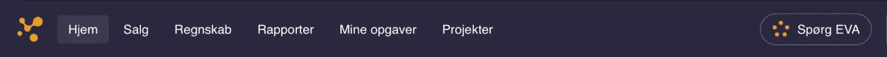
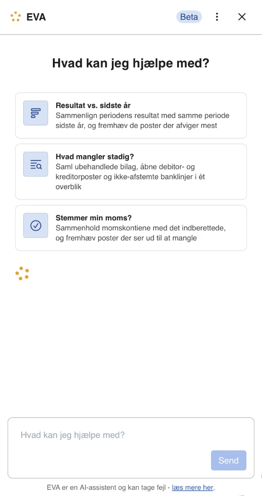
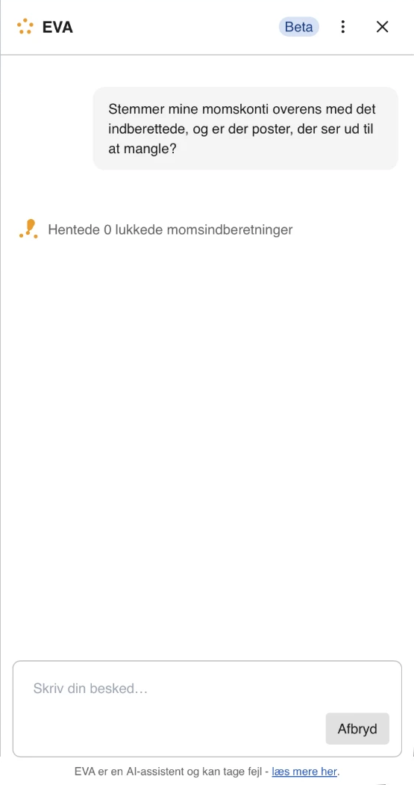
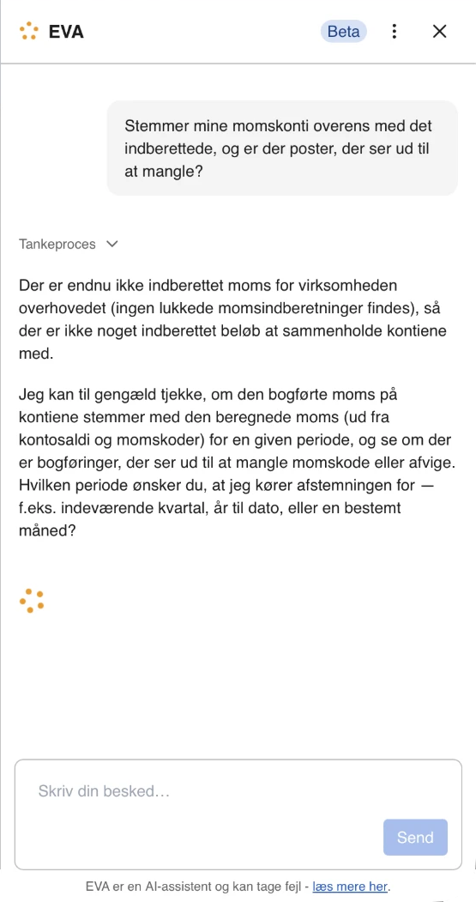
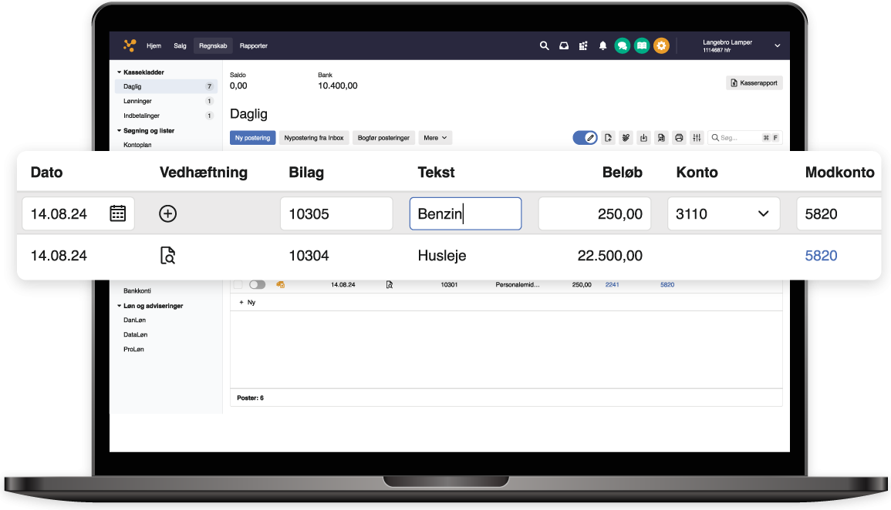
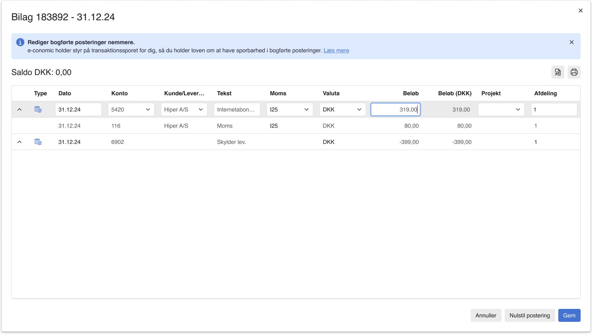

Visma e-conomic.
e-conomic is Denmark’s largest accounting platform, part of Visma. I joined in December 2024, working on the daily ledger, where accountants and bookkeepers spend their day, on the identity of EVA, its assistant, and with the AI enablement team on how the organisation finds out what to build.
Senior UX Designer, December 2024 to now.
EVA
e-conomic was giving its customers an assistant, EVA, and she needed a presence of her own: something that could sit in a toolbar, show that she is working, and still be unmistakably e-conomic. Rather than invent a new symbol, her identity grows out of the one the company already has. The e-conomic mark is five orange circles fused into one shape. EVA is that mark set in motion.
The same five circles, the same orange, the same fusion, now able to move. At rest they settle into a calm pentagon, present and holding the whole picture. When a question comes in they gather, then regroup into a constellation drawn for that question, and settle back once the answer is there. The result respects the mark it came from and adds the one thing an assistant needs: a way to show that she is thinking.
EVA in the product
The mark is the way in, in the top bar, and it is what you watch while she works, in the panel’s header. On the dark chrome and on the page’s white it is the same orange and the same rhythm; everything around it adapts to the surface.




Inline editing
Inline editing brought editing into the table itself, speeding up accountants’ daily workflows considerably. During the beta and launch we conducted over 40 user interviews, and more than 700 pieces of written feedback came in, shaping the feature that is now out to all users. Read about it on e-conomic.dk.

The shortcuts
The table is made for keyboard work: shortcuts move between fields, create lines and copy values down the column.
Edit booked entries
Editing booked entries used to mean reversing them by hand. Now a correction is typed directly on the booked entry, and the system books the reversal in the background. The support article shows the flow.

Finding out what to build
The other half of the role is with the AI enablement team, on using AI in the discovery process. Prototypes used to be expensive enough that teams rationed their experiments; AI made them cheap, and I have been part of making the harness that makes a prototype built with AI look and work like the real product, so a PM or UXer can turn an idea, a feature request or a PRD into something customers can try.
The longer story of this work is a note of its own: Building to learn.